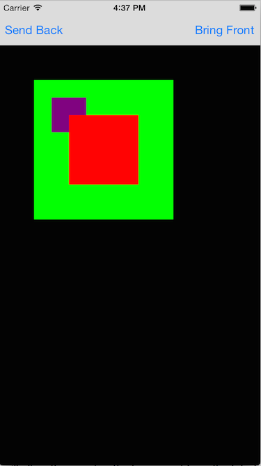
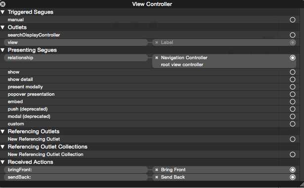
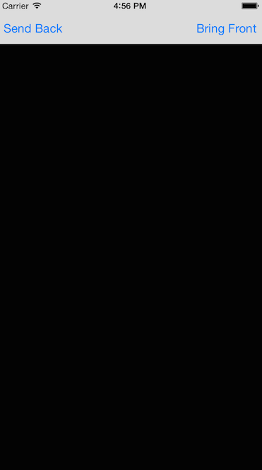
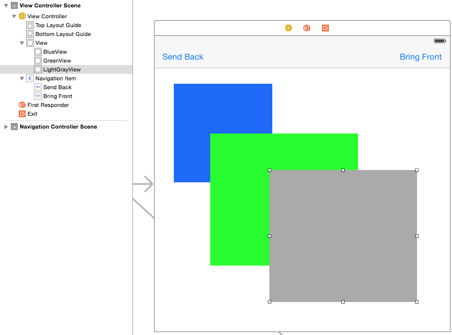
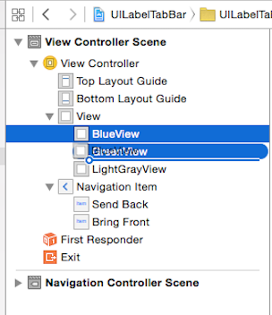
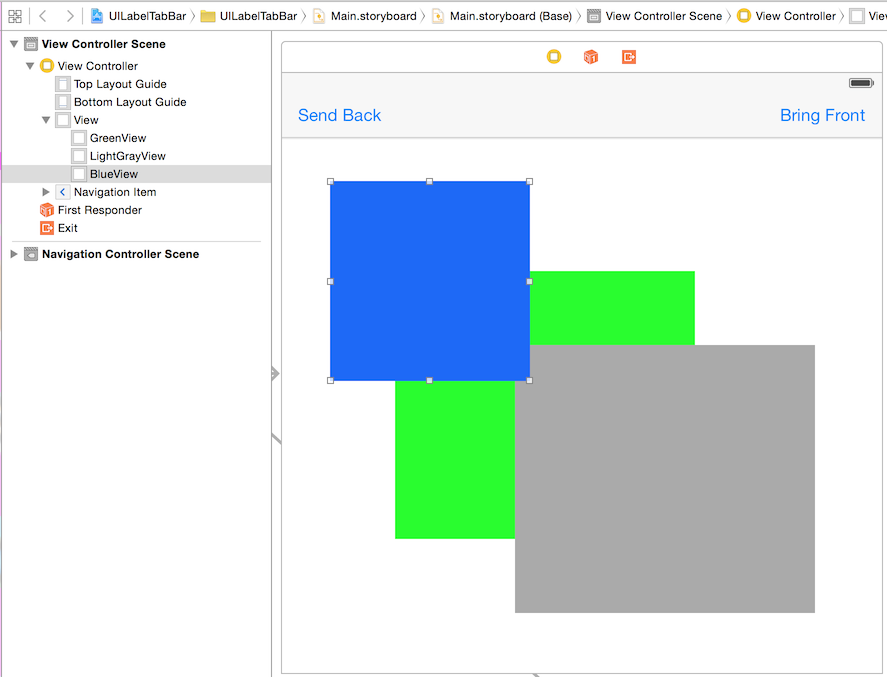

I have seen this a lot where users on sites such as Stack Overflow have issues with the iOS UIView hierarchy. Many of the questions are related too how do i make a view stay behind another view or how do i make a view be the bottom view of the UIViewController. Looking at these questions the answers tend to be different on a per user answered basis and generally only cover either how to do it in a Storyboard but not in code or vice versa. The purpose of this blog post is to show both ways of manipulating the UIView hierarchy.
Code Based
Using code to manipulate the view hierarchy standard UIKit provides all of the methods you will ever require right out of the box inside the UIView class. The main benefit in using code to manipulate the view hierarchy is that you can manipulate the view hierarchy at run time and based on configurations or runtime data alter the view hierarchy to be completely different than the original initialization. Some of the UIKit methods that can be utilized to manipulate your view hierarchy are listed below.
- addSubview:
- bringSubviewToFront:
- sendSubviewToBack:
- insertSubview:atIndex:
- insertSubview:aboveSubview:
- insertSubview:belowSubview:
- exchangeSubviewAtIndex:withSubviewAtIndex:
This blog posting will show examples of 'addSubView:', 'bringSubviewToFrom:', 'sendSubViewToBack:', 'insertSubview:aboveSubview:' and finally 'insertSubview:belowSubview'. Based on what has been stated above the code below will create an initial view hierarchy for a particular 'UIViewController' dynamically creating the views via code in the 'viewDidLoad:' method of the 'UIViewController'.
@implementation ViewController {
UIView *_blackView;
}
- (void)viewDidLoad
{
[super viewDidLoad];
// 1.
_blackView = [[UIView alloc] initWithFrame:self.view.bounds];
_blackView.backgroundColor = [UIColor blackColor];
[self.view addSubview:_blackView];
// 2.
UIView *redView = [[UIView alloc] initWithFrame:CGRectMake(100.0f, 100.0f, 100.0f, 100.0f)];
redView.backgroundColor = [UIColor redColor];
[self.view addSubview:redView];
// 3.
UIView *greenView = [[UIView alloc] initWithFrame:CGRectMake(50.0f, 50.0f, 200.0f, 200.0f)];
greenView.backgroundColor = [UIColor greenColor];
[self.view insertSubview:greenView belowSubview:redView];
// 4.
UIView *purpleView = [[UIView alloc] initWithFrame:CGRectMake(75.0f, 75.0f, 50.0f, 50.0f)];
purpleView.backgroundColor = [UIColor purpleColor];
[self.view insertSubview:purpleView aboveSubview:greenView];
}
- Creates a background view with the fill color black and has it fill the whole view. Note the black view is an instance variable (iVar) so that we have a reference to it later in this blog posting.
- Creates a view with a width and height of 100 pixels and a background fill color of red and an offset of 100 pixels from the top and left of the parent view. The view is added to the UIViewController view using the 'addSubview:' method.
- Creates a view with a width and height of 200 pixels and a background fill color of green and an offset of 50 pixels from the top and left of the parent view. The view is added to the UIViewController view using the 'insertSubview:belowSubview:' method.
- Creates a view with a width and height of 50 pixels and a background fill color of purple and an offset of 75 pixels from the top and left of the parent view. The view is added to the UIViewController view using the 'insertSubView:aboveSubview:' method
When running the code above the view hierarchy will be displayed on the device.
Now that you have created the views and done some simple movement of the views it is time to do some more changes to the view hierarchy. To do this two 'UIBarButtonItems' have been created in the StoryBoard and hooked up to their respective 'IBAction' methods as shown below.
As the button names suggest they are going to bring a view to the front and send a view to the back. For the purpose of this blog we are going to bring the black backing view to the front then send it to the back again. This will show the view hierarchy at work since bringing the black view to the front will obscure all other views that are behind it and sending the black view to the back will reset the view hierarchy back to what was originally loaded.
- (IBAction)sendBack:(id)sender
{
// 1.
[self.view sendSubviewToBack:_blackView];
}
- (IBAction)bringFront:(id)sender
{
// 2.
[self.view bringSubviewToFront:_blackView];
}
- Tells the view controller view to send the subview referenced by the '_blackView' iVar to the back of its view hierarchy
- Tells the view controller view to bring the subview referenced by the '_blackView' iVar to the front of its view hierarchy
By tapping the "Bring Front" button in the navigation bar the black view will be brought to the front and the view hierarchy on the device will now look as shown below.
As you can see from the image the black view now completely obscures all of the other views and is the only view that is visible to the user. Tapping on the "Send Back" button will return the view hierarchy to what you originally had when the view was originally loaded.
Storyboard / XIB Based
A Storyboard / XIB based view hierarchy is basically a static hierarchy of how the 'UIViewController' will layout its views and their subviews when it is initialized. Creating the view hierarchy in the Storyboard / XIB file is just as simple as dragging and dropping the components onto the view controller provided for you. The view hierarchy in a storyboard is based on when the subview is dropped onto it. Think of dropping a subview onto a Storyboard / XIB as though you were using the coding method 'addSubview:'. The first subview that is dropped will be the back most subview in the hierarchy. As you drop more and more subviews on the hierarchy you will see that they are placed on top of existing subviews already in the hierarchy as shown below.
The views were named in the view hierarchy on the left hand side of the image above so you can see the current hierarchy. In the storyboard the simplest approach to altering the view hierarchy is to click on the view in the left hand side and and drag the view to the appropriate position in the hierarchy as shown in the image below.
Now when you look at the hierarchy the blue view will be on top of all other views in the view hierarchy as shown below.
Conclusion
While it is easier to setup view hierarchies inside Storyboard and XIB file and also setup IBOutlets in order to control them as though you have set them up through the code, at some point you will still have to use the code approach in order to manipulate the view hierarchy at runtime. Lots of people decide not to use Storyboard or XIB files at all and only write their view hierarchy in the code itself. Personally for me i decide based on the widget / control or hierarchy and then determine which would be the most cost effective time wise and also how maintainable the actual code will be.
Main Page